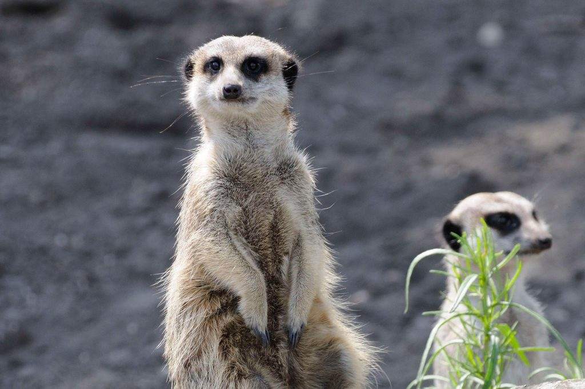

Artemis dierenopvang is een opvang waar in principe ieder dier in nood welkom is
Onze organisatie richt zich voornamelijk op huisdieren en wij zijn in regio Den Bosch
de opvang met de meeste huisdieren. Wij werken vanuit de gedachte dat ieder dier die hulp
nodig heeft geholpen moet worden ongeacht waar het dier geboren is, een ziekte of handicap
heeft of dat de eigenaar wel of geen geld heeft voor de afstandskosten. Deze werkwijze is
afwijkend van de meeste opvangen.
Wij vangen zowel Nederlandse dieren op als dieren die in het buitenland geboren zijn
Deze laatste groep wordt veelal onbegrepen en dreigt vaak tussen wal en schip te belanden.
Helaas worden dieren nog vaak van een foto uitgezocht en vervolgens naar Nederland gestuurd.
Met deze plaatsingen gaat het regelmatig mis en er is dan geen opvang voor deze dieren. Om te voorkomen
dat ze op verkoopssites belanden en vervolgens van hand tot hand gaan om nog meer trauma´s op te lopen richten
wij ons op de opvang voor deze dieren. Bij ons komen ze tot rust, worden ze eventueel getraind en gaan we vanuit
daar op zoek naar een definitief thuis.
Het doel van onze stichting is het opvangen van deze 'overbodige' dieren
deze verzorging en eventueel training te
geven en vervolgens op zoek te gaan naar een liefdevolle nieuwe baas.
Wij werken vanuit de gedachte dat op ieder potje een deksel past en er uiteindelijk een liefdevol thuis voor
ieder dier komt.
Indien het dier zich prima voelt in de opvang is deze welkom zolang nodig is. Wij hanteren
dan ook een absoluut NO KILL beleid en euthanasie is alleen aan de orde bij ondragelijk lijden.
Omdat ieder dier een tweede kans verdient!